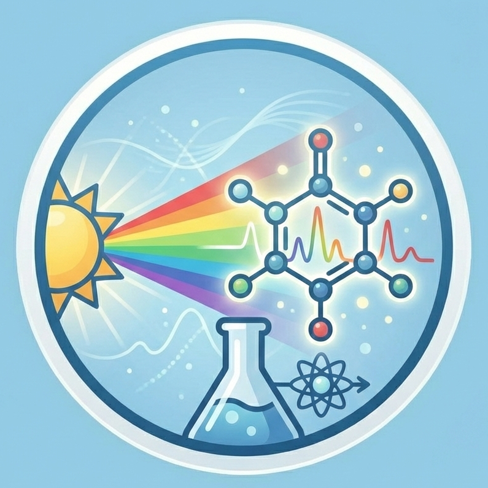

The Power of Spectral Intelligence
From Computer Vision to Material Intelligence
The information gap in modern sensing
Most computer vision systems use RGB cameras built for photography, mimicking human vision, rather than for true sensing. By compressing the spectrum into three broad channels, RGB throws away crucial physical information from light. This often means different materials can appear identical to a machine, creating a fundamental spectral ambiguity that undermines critical applications like sorting, agriculture, and diagnostics.
The chemistry of light
 Hyperspectral imaging (HSI) pivots from imaging (appearance) to spectroscopy (composition). Molecules have unique spectral signatures: electronic transitions in the visible–NIR reveal pigments like chlorophyll, melanin, and hemoglobin, while SWIR vibrational overtones of bonds (C–H, O–H) expose plastics, water, and lipids. Resolving light into many narrow bands lets machines “see” chemistry rather than color.
Industrial impact: Solving the invisible problems
Spectral imaging detects properties that standard cameras cannot, enabling quantitative, label-free assessment across critical sectors.
1. Healthcare: Label-free diagnostics

Spectral imaging uses intrinsic biomarkers as contrast, mapping hemoglobin dynamics and tissue chemistry non-invasively. This enables real-time perfusion and oxygenation mapping, dye-free tumor margin assessment, retinal biomarker screening, and digital histopathology on unstained slides.
2. Precision agriculture: Predicting the future

HSI detects plant stress before visual symptoms. Red-edge shifts track chlorophyll dynamics, SWIR water bands quantify canopy moisture, and NIR/SWIR spectra differentiate weeds for targeted spraying. Light scattering correlates with internal fruit quality, enabling sorting by taste, not appearance.
3. Machine vision: Sorting the indistinguishable

HSI separates lookalike materials through their chemistry. SWIR bands distinguish polymers like PET vs. PVC, reveal foreign objects in food streams, and quantify process moisture for energy-efficient drying.
4. Remote Sensing: Quantitative Earth Observation

Satellites today are excellent at mapping where things are. Spectral imaging allows them to measure what is there.
- Mineralogy: Different minerals (lithium, copper, iron oxides) have distinct spectral reflectance curves, allowing for efficient geological surveying from orbit.
- Environmental Monitoring: Tracking algal blooms, methane leaks, or oil spills based on their specific spectral absorption features rather than just their visual presence.
- On-Orbit Edge AI: Addressing the “Data Bottleneck”. Lumos enables satellites to process spectral cubes on-orbit and downlink only actionable alerts (e.g., “Fire Detected”) instead of raw terabytes.
- UAV Sensing: The snapshot architecture eliminates the motion artifacts (“wobble”) common in push-broom scanners, facilitating drone-based monitoring without heavy gimbals.
The Universality of Spectral Intelligence
Hyperspectral imaging is a platform technology. Beyond the major pillars above, it is rapidly disrupting niche high-value verticals.
🔬 Microscopy & Endoscopy
In-Vivo Biopsy: Bringing the lab to the patient. HSI endoscopes can identify tumor boundaries in real-time during surgery, reducing the need for repeat excisions. In microscopy, it allows for label-free histopathology, identifying cell types without staining.
🛡️ Defense & Security
De-Camouflage: Seeing the unseen. Man-made camouflage materials (nets, paints) attempt to mimic natural backgrounds in the visible spectrum but fail to match the complex spectral curves of chlorophyll in the NIR/SWIR. HSI makes camouflaged targets “pop” against natural foliage.
🕵️ Forensics
Trace Evidence Analysis: Non-destructive investigation. From estimating the age of bloodstains (via hemoglobin oxidation states) to visualizing gunshot residue and detecting forged signatures on documents where different inks were used.
💊 Pharmaceuticals
Quality Assurance: 100% Inspection. Regulatory standards require uniform API distribution. Lumos provides 100% inspection of blister packs, identifying mixing errors or counterfeits based on chemical composition rather than color.
🎨 Art Conservation
Non-Invasive Restoration: Identifying pigments and binders used by old masters without taking physical samples. HSI reveals underdrawings (sketches beneath the paint) and previous restoration attempts.
💄 Cosmetics & Skin Analysis
Quantifying Efficacy: Measuring skin hydration, melanin distribution, and collagen structure to objectively quantify the effects of cosmetic products, moving beyond subjective “before and after” photos.
The Lumos Difference
Traditionally, accessing this “Material Intelligence” required bulky, expensive ($50k+), and slow line-scanning cameras.
Lumos democratizes this power. By packaging a high-performance spectrometer into a snapshot camera form factor, we allow these advanced diagnostic capabilities to be deployed on drones, production lines, and handheld devices for the first time.